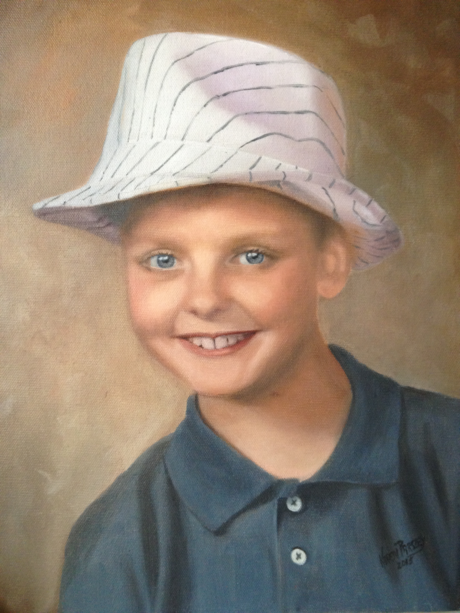

Welcome to Parsley Paintings

My journey into oil paintings began in the country of Bangladesh! For 13 years my husband and I were missionaries there! We spent our time working in Bangladesh and surrounding countries! When I was there, I was invited to join a group of
women who painted with a local artist!
I was very intrigued by the people I met along the way. Their faces told it all, the hard work, harsh life, and the acceptance of that life without knowing that there was anything better.
After we moved back to the United States the next 25 years me and my husband's responsibilities took us beyond Southern Asia, too many different countries of Europe, the Middle East, and the Former Soviet Union. No matter where I went, every
face I saw told a different story of their life!
After I retired, I began to take painting classes again! I found a love for the paintings of the Masters. To me, they reveal the life of a different era, it gives me a glimpse of the past, and an appreciation for the present!
-Karen Parsley (Artist)